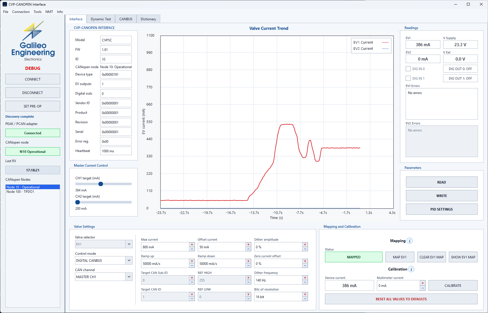
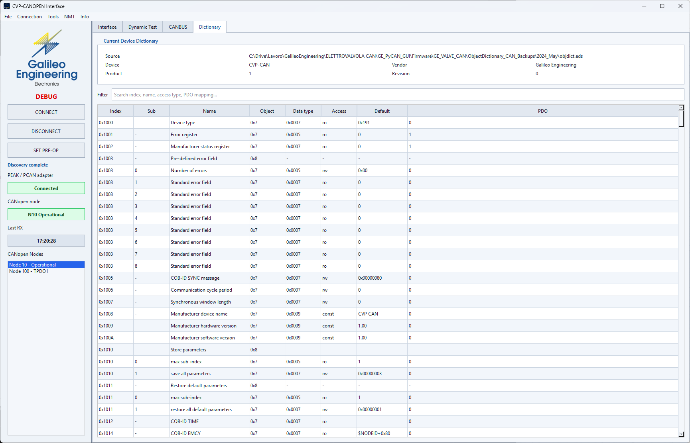
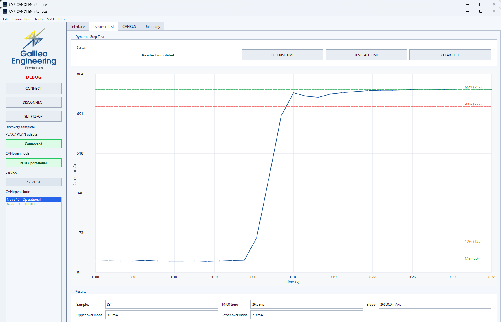
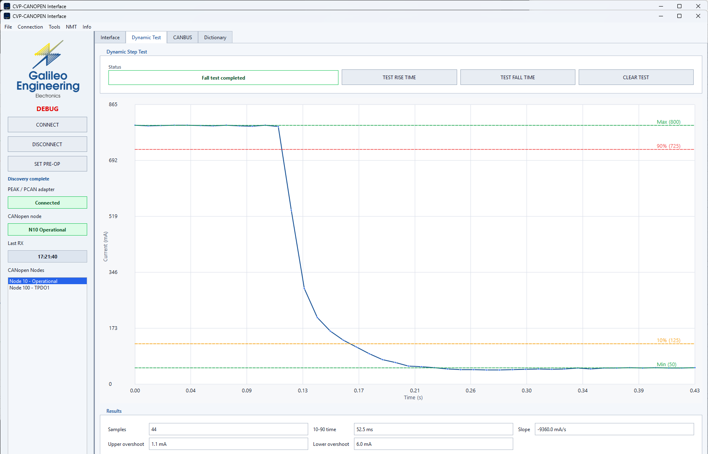
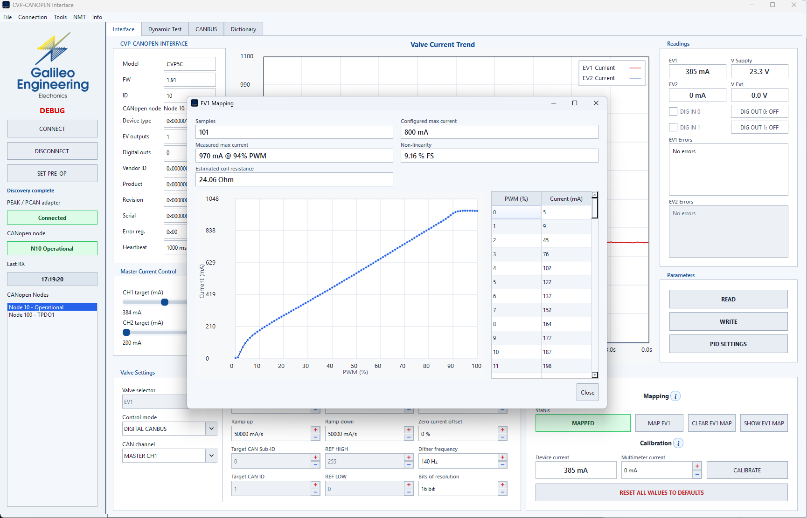
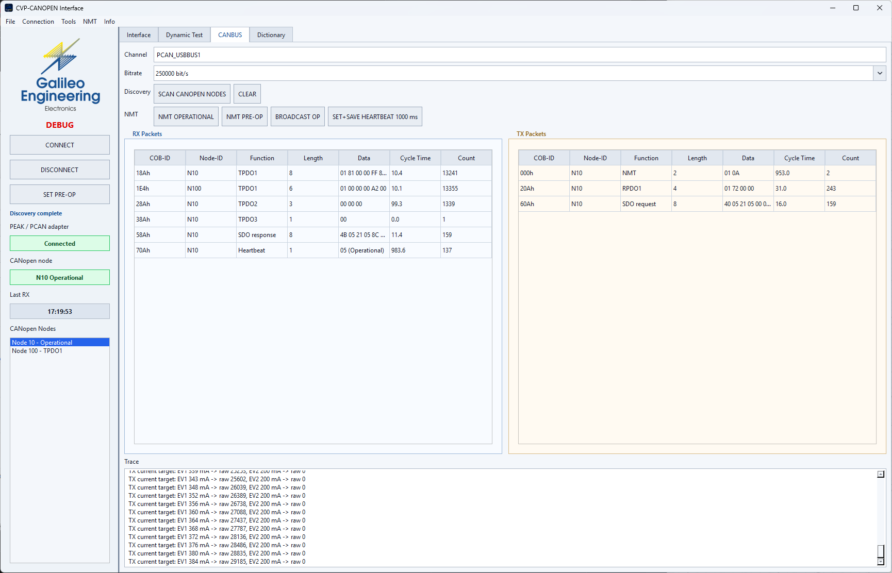

CVP5-C Electronic Hydraulic Driver
Compact and efficient electronic regulator designed for precision control of proportional valve solenoids with standard CANopen communication and Zephyr RTOS.
1. General Description
The CVP5-C Proportional Valve Controller is a compact and efficient electronic regulator designed for precision control of proportional valve solenoids. This controller seamlessly integrates with the CANopen communication protocol and the Zephyr RTOS for robust performance and control, catering to a wide range of mobile and industrial hydraulic applications.
CVP5-C comes in a small and compact form factor available with standard M12 connector (rated IP67 for dust and water ingress protection) or with standard DIN EN 175301-803 connector, making it a versatile solution for harsh environments.
2. Key Features
- Robust Design: Built to withstand harsh environments, the CVP5-C features protection against power supply polarity inversion and solenoid short circuits (5 ms detection time), ensuring longevity and reliability in demanding conditions.
- Compact Form Factor: The compact design enables easy installation and integration into a wide range of applications without consuming excessive space.
- CANopen Protocol: CANopen integration allows communication with other devices and systems, providing access to a broad ecosystem of sensors, actuators, and controllers.
- Zephyr RTOS Integration: Built on Zephyr RTOS, the CVP5-C ensures deterministic execution, efficient multitasking, and responsiveness for demanding control tasks.
- Diagnostics LED: A 3-color RGB LED indicates the status of the controller, providing visual feedback on operation and troubleshooting.
- High-Frequency PWM: 5 kHz PWM output ensures quiet valve operation and low mechanical wear.
- Adjustable Dither: Frequency adjustable from 50 to 300 Hz with configurable amplitude (0 to 20%) to virtually eliminate valve spool stiction and hysteresis.
3. Technical Specifications
| Parameter | Value | Notes / Conditions |
|---|---|---|
| Supply Voltage | 12 - 30 Vdc | Rectified and filtered, max ripple < 10% |
| Recommended Filter Capacitor | 4700 uF / 35V | Electrolytic capacitor on power rails |
| Coil Voltage Margin | > 1.5 V | Supply must exceed nominal valve coil voltage by at least 1.5V |
| Standby Current Absorption | 30 mA max | No load connected |
| Average Power Absorbed | 35 W | Under full rated load |
| Output Current Range | 0 - 2.5 A | Adjustable via CANopen SDO parameters |
| Offset Current Range | 0 - 0.6 A | Adjustable via CANopen SDO parameters |
| Current Regulation Precision | +/- 1 mA | 16-bit internal current regulation loop |
| PWM Frequency | 5 kHz | Fixed switching frequency |
| Dither Frequency | 50 - 300 Hz | Adjustable (default 125 Hz via SDO 0x2105:5) |
| Dither Amplitude | 0 - 20% | Of nominal configured output current |
| Ramps (Up and Down) | 0.01 - 50 A/s | Adjustable independent linear acceleration/deceleration |
| Temperature Stability | +/- 5 mA | Across full -20 deg C to +70 deg C range |
| Short Circuit Cutoff Time | 5 ms | Hardware shutdown protection on output short-circuit |
| Operating Temperature | -20 deg C to +70 deg C | Industrial temperature range |
| Ingress Protection | IP67 (M12) / IP65 (DIN) | According to selected connector configuration |
| Physical Dimensions | 77 x 38 x 40.5 mm | Excluding mating connector protruding parts |
| Unit Weight | 100 g | Encapsulated electronics assembly |
4. Physical Dimensions
The CVP5-C is packaged in an ultra-compact ruggedized plastic enclosure engineered for direct mounting onto hydraulic valve bodies or manifolds:
- Overall Length: 77.0 mm
- Overall Width: 38.0 mm
- Overall Height: 40.5 mm
- Mounting Hole Pitch: 62.5 mm
- Connector Centerline Offset: 20.0 mm
- Total Weight: 100 grams
5. Connector Options
To accommodate diverse mobile hydraulic and industrial machine architectures, the CVP5-C is offered in two standardized connector configurations:
| Connector Type | Protection Rating | Application Target |
|---|---|---|
| M12 4-Pole Circular (A-Coded) | IP67 (Dust-tight, temporary water immersion) | Heavy mobile machinery, agricultural equipment, off-highway construction vehicles. |
| DIN EN 175301-803 (Form A / Hirschmann ISO 4400) | IP65 (Dust-tight, water spray protection) | Stationary industrial hydraulics, standard valve coils, factory automation benches. |
6. Electrical Connections & Pinout (M12)
For the M12 circular connector variant, wiring must follow the standard 4-pin A-coded configuration:
| Pin | Wire Color | Signal Name | Description |
|---|---|---|---|
| PIN 1 | BROWN | +Vdc Supply | Positive power supply (12 - 30 Vdc) |
| PIN 2 | WHITE | CAN + | CANopen differential high line (CAN_H) |
| PIN 3 | BLUE | 0V Ground (GND) | System common power ground |
| PIN 4 | BLACK | CAN - | CANopen differential low line (CAN_L) |
7. Power Supply & Filtering Notes
- Voltage Range: The power supply voltage must be strictly within the 12 to 30 Vdc range.
- Filtering Requirement: It is necessary to power the system with rectified and filtered voltage. The maximum allowable rectified and filtered ripple voltage is 10%.
- Electrolytic Capacitor: The use of a 4700 uF / 35V electrolytic capacitor is recommended in order to filter the power voltage supply and stabilize high-frequency current switching.
- Coil Voltage Margin: The electronic controller can drive valves with coils powered at 12 Vdc or 24 Vdc. To ensure the nominal maximum current value of the coil, the voltage supply of the controller must exceed the nominal voltage supply of the coil valve by at least 1.5 V.
- Calibration: The controller is factory-calibrated to suit a wide spectrum of solenoid valves. Specialized applications may necessitate fine-tuning of PID gains and current mapping to align with specific coil inductance and resistance characteristics.
8. PyCanGui Testing & Evaluation Utility
8.1 PEAK PCAN-USB Interface Compatibility
PyCanGui communicates over the CAN bus via the industry-standard PEAK PCAN-USB adapter.
For hardware specifications, user manuals, and official drivers, visit the official PEAK-System product page:
8.2 Testing & Calibration Features


Dynamic Step Response Evaluation
Used to verify solenoid movement dynamics, rise times, and deceleration ramps:


Flow Linearization Curve Editor
10-point curve calibration to compensate for valve spool overlap and non-linear flow rates:

Bus Monitor
Low-level CAN bus frame logger for verifying packet timing and telegram validity:

9. Product Development Roadmap
An expanded hardware version featuring 2 PID proportional outputs (for bidirectional or dual valve control) and 2 digital ON/OFF outputs is currently under active development at Galileo Engineering.
10. Technical Manuals & Integration Guides
Complete communication profiles, object dictionaries, and master implementation guides are available in dedicated technical documentation portals:
CANopen Protocol Specification
Comprehensive CiA 301 / CiA 408 communication profile for the CVP5-C proportional valve controller. Includes real-time PDO mapping (RPDO1, TPDO1, TPDO2), complete SDO Object Dictionary with all index and sub-index parameters, 3-color RGB LED diagnostics, and raw bus telegram examples.
- CiA 301 / 408 standard communication profiles
- RPDO1 setpoint & TPDO1/2 feedback mapping
- Complete 0x1000 - 0x6441 SDO Object Dictionary
- RGB status LED & fault code tables
- Expedited SDO telegram examples
Distributor Integration Manual
Distributor-facing engineering guide for developers and OEMs creating a custom CANopen master PLC driver or embedded controller without PyCanGui. Includes master startup sequencing, real-time bus timing, mathematical current scaling equations, SDO commissioning flows, CiA 305 LSS Node-ID configuration, safety watchdog rules, and ready-to-run Python and ANSI C driver implementations.
- Master startup checklist & timing sequence
- Current reference scaling formulas (8-bit / 16-bit)
- SDO parameter commissioning & flash storage
- CiA 305 Layer Setting Services (LSS) procedures
- Continuous safety watchdog & fault handling rules
- Ready-to-use Python and ANSI C driver code
11. Downloads & Documentation Files
Official CVP5-C Datasheet
Official Galileo Engineering CVP5-C-M12 PDF technical datasheet with full ratings, dimensions, and connection diagrams.
Download Datasheet (PDF)PyCanGui Testing Setup
Windows evaluation package (v1.1.0) with embedded runtime and bundled PEAK PCAN-Basic drivers for functional testing.
Download Setup (179 MB)CANopen Master Files (EDS)
Electronic Data Sheet (CiA 306) and XML device descriptions for importing CVP5-C into Codesys, TwinCAT, or PLC masters.
Download EDS FileTechnical Documentation Portals
Direct access to dedicated technical manuals for protocol reference and master controller integration.